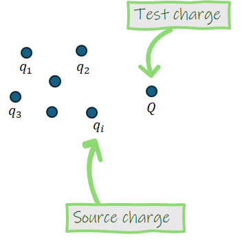
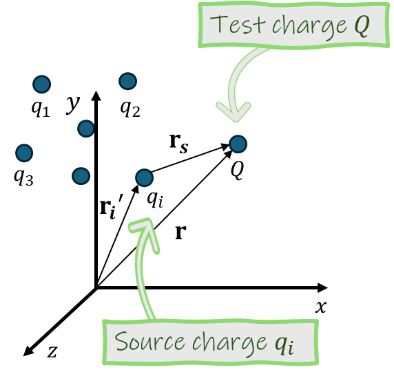
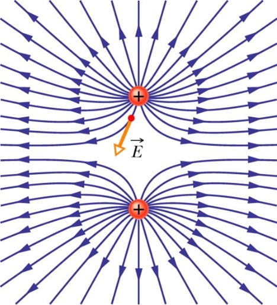
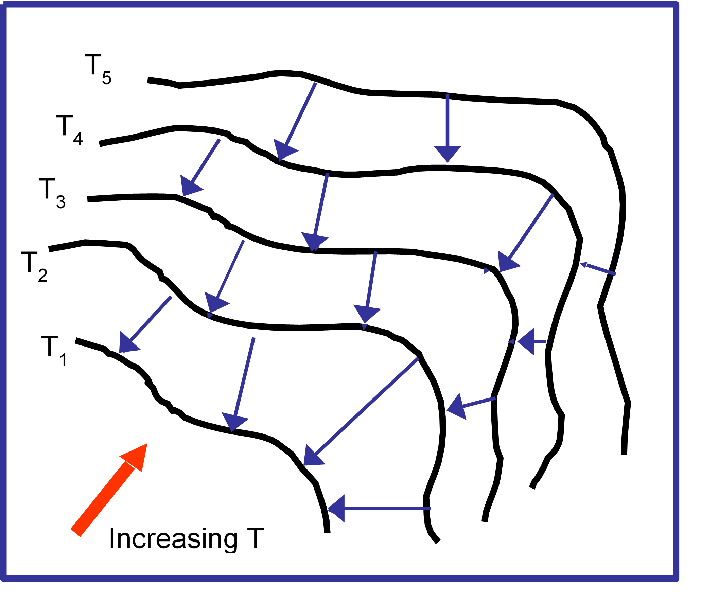

1 Lecture 1: Electrostatics - Charges, Forces & Fields
Recommended reading: Griffiths Section 2.1 (and 2.2 if you want some bonus reading about stuff that will be important later)
1.1 Pre-lecture problem
Griffiths Problem 1.7
1.2 Electric Charges
Electric charge is a fundamental property of matter. Many fundamental particles (such as electrons and protons) have charge. However, macroscopic objects can also be charged due to having a distribution of charged particles on them that has a small imbalance in charge - we might describe these as “charged objects”.
Charge gives rise to electric fields, and hence to the electric forces experienced between charged particles or objects.
Charge can be either a positive or negative quantity. “Like” charges (charges with the same sign) repel each other, and opposite charges attract.
Charge is quantized and comes in integer multiples of the elementary charge \(e\) which has an approximate value of \(1.602 \times 10 ^{-19}\) Coulombs. Electrons carry a charge of \(-e\), and protons carry a charge of \(+e\). Charges measured in laboratories are always multiples of \(e\) but the quarks inside protons and neutrons and other hadrons have charges that are fractions of this elementary charge.
Charge is conserved - or more specifically, the total charge in an isolated system is conserved. (At least, this has been the case in all the particle interactions physicists have so far observed.) Hence, charge can be neither created nor destroyed, but can only be transferred from one object to another.
Gravitational charge: there is one type of gravitational charge, which is mass/energy. Gravitational charges attract. We don’t know about quantization of mass. (You can probably spend many hours on the internet reading different opinions on this). Mass/Energy is conserved and all everyday objects are gravitationally charged so they all attract each other, but gravity is very weak–we can easily pick up bits of paper with an electrically charged rod when rather few electrons have been moved.
1.3 Some definitions and important notation
Here I will briefly explain some notation and definitions I will use in this course for setting up and solving problems involving electric charges.
Consider the following ensemble of charges:

We define the charges \(q_1\), \(q_2\), \(q_3\)… \(q_i\) as source charges, meaning that these are the charges that produce the electric field for the purpose of the problem. We define \(Q\) as the test charge, which means it is the charge that is experiencing the effects of the electric field produced by the source charge(s). Of course, any charge can be a source or a test charge, there is no fundamental difference between them. “Source” and “test” are simply names that we give charges when setting up a problem, so that we can more easily define and solve the problem.

1.4 Electric Forces & Coulomb’s Law
All charges produce electric fields, and other charges that are in the prescence of this field experience a force as a result.
The force on a test charge \(Q\), exerted by a source charge \(q\), is given by Coulomb’s Law, which is as follows: \[ F = \frac{1}{4\pi \epsilon_0} \frac{q Q}{r^2} \hat{\mathrm{\mathbf{r}}} \]
where:
- \(\hat{\mathrm{\mathbf{r}}}\) is the unit vector in the direction of the force, which points from \(q\) to \(Q\).
- \(r\) is the separation between \(q\) and \(Q\).
- \(\epsilon_0\) is a physical constant known as the
If \(q\) and \(Q\) have the same sign (like charges) the force is repulsive (\(\mathrm{\mathbf{F}}\) is a positive quantity); if \(q\) and \(Q\) have different signs, the force is attractive (\(\mathrm{\mathbf{F}}\) is a negative quantity).
1.5 Electric Field
The electric field \(\mathrm{\mathbf{E}}\) produced by a charge (or charged object/charge distribution) is a vector field that represents the force per unit charge experienced by a positive test charge placed at a particular point in space:
\[ \mathrm{\mathbf{E}}= \frac{\mathrm{\mathbf{F}}}{Q} \]
which can be rearranged to the more familiar form \(\mathrm{\mathbf{F}}= Q \mathrm{\mathbf{E}}\).
\(\mathbf{E}\) has units of Vm\(^{-1}\) or NC\(^{-1}\).
The electric field is normally represented by field lines that indicate the direction of the field. The direction of the field is determined by what a positive test charge will do. That’s why field lines point towards negative charges - that’s the direction a positive charge would travel if it encountered the field of a negative charge. The density of lines/arrows indicates the strength of the field at a point. You may also see fields drawn where the size of the arrows represents the electric field strength. The diagram below shows the electric field lines for two positive point charges of the same magnitude.

Most important rules for field lines: * Lines begin on positive charges and end on negative charges. * Lines never intersect. * Lines are symmetric as they leave the charges.
1.6 Superposition Principle
The principle of superposition states that “the interaction between any two charges is completely unaffected by the presence of others”. This means that the total force on a test charge can be computed by calculating the force on the test charge due to each source charge separately, then adding up the contributions, as follows:
\[ \mathrm{\mathbf{F}}_{tot} = \sum_i \mathrm{\mathbf{F}}_i \]
The same applies to the electric field, which can be calculated for any given point in space as a sum of the electric field at that point from all the source charges: \[ \mathrm{\mathbf{E}}_{tot} = \sum_i \mathrm{\mathbf{E}}_i \]
1.7 Summary
Electric charges create electric fields, which exert forces on other charges. Coulomb’s Law describes the force between point charges.
1.8 Bonus content: vector fields
1.8.1 What is a field?
Recommended reading:
A field is a region of space, where property of that space is characterized by either a number (a scalar field) or by three numbers (a vector field).
The concept of a field circumvents the problem of action at a distance, where one inanimate object is “aware” that another has arrived. We understand that the first body sets up a field and the second body interacts with the first via this field.
1.8.2 Scalar and vector fields
A scalar field is characterized at each point by a single number. e.g. the temperature, \(T\), at each position in a block of metal heated at some places and cooled at others.

\(T\) is a function of position i.e. \(T = T(x,y,z)\). At every point we can measure the scalar value of the temperature \(T\). The black lines represent isotherms i.e. lines where the temperature is constant (\(T_1 < T_2 < T_3 < T_4 < T_5\)). Heat flow (blue arrows) is perpendicular to the contours of constant temperature - the isotherms (\(T_1\), \(T_2\) etc). The magnitude of the heat flow is proportional to the temperature gradient, so that the heat flow is larger when isotherms are closer together.
The scalar temperature field has an associated vector field, because at any point, the heat flow is a vector, the magnitude and direction of which depend on position. Heat flow is therefore a vector field which is related to the scalar field of temperature. The vector gradient of the field of heat flow depends on the temperature at each point.
1.8.3 Link between scalar and vector field
Recommended reading:
For the scalar temperature field \(T(x,y,z)\) the vector describing the direction and the magnitude of the maximum temperature gradient is:
\[\begin{equation} \text{Grad} \; T = \nabla T = \frac{\partial T} {\partial x} \hat{\mathbf{i}} + \frac{\partial T}{\partial y} \hat{\mathbf{j}} + \frac{\partial T}{\partial y} \hat{\mathbf{k}} \end{equation}\]
The heat flow is a vector given by \(\mathbf{Q} = -k \nabla T\); the minus sign is because heat flows from high temperature to low temperature.
In general, for a scalar potential \(-\nabla \phi = \frac{\partial \phi} {\partial x} \hat{\mathbf{i}} + \frac{\partial \phi}{\partial y} \hat{\mathbf{j}} + \frac{\partial \phi}{\partial y} \hat{\mathbf{k}}\) describes the magnitude and direction of the physical effects of the potential, with an appropriate constant if needed. In the case of the electric field if the electric potential is \(V\) then the vector field \(\mathbf{E} = -\nabla V\).
As an example, the gravitational field can be obtained from the gravitational potential. The scalar gravitational potential energy is given by \(U = mgz\) near the Earth’s surface, where \(z\) is the height. The gravitational potential is \(U/m = gz\). The gravitational field is \(-\nabla(gz)=-g \hat{\mathbf{k}}\).
1.8.4 Other operations on vectors
The vector operator \(\nabla\) behaves as a vector. We have looked at grad \(\nabla\phi\) where \(\phi\) is a scalar field. In Maxwell’s equations, which you cover next year, you will also meet \(\nabla\) operating on the electric field \(\mathbf{E}\):
\(\nabla \cdot \mathbf{E}\) (div or divergence)
\(\nabla \times \mathbf{E}\) (curl or rotation)
Maxwell’s equations are one of the great achievements of 19th century Physics. They link the phenomena of electricity and magnetism and can be used to derive an expression for the speed of light. Einstein said that the theory of Relativity was rooted in Maxwell’s equations. The equations in their differential form are shown below and we will meet most of the concepts in this course and integral versions of some of the laws. You can read more about Maxwell’s Equations in Chapter 30 of Tipler and Mosca.
\[\begin{equation} \nabla \cdot \mathbf{E} = \frac{\rho}{\epsilon_0} \end{equation}\]
\[\begin{equation} \nabla \times \mathbf{E} = - \frac{\partial \mathbf{B}}{\partial t} \end{equation}\]
\[\begin{equation} \nabla \cdot \mathbf{B} = 0 \end{equation}\]
\[\begin{equation} \nabla \times \mathbf{B} = \frac{\mathbf{j}}{c^2 \epsilon_0} + \frac{1}{c^2} \frac{\partial \mathbf{E}}{\partial t} \end{equation}\]
Source: http://www.clerkmaxwellfoundation.org/html/about_maxwell.html ; https://maxwells-equations.com/
1.9 Post-lecture problem
In the lecture, we found the electric field (magnitude and direction) a distance \(z\) above the midpoint between two equal charges, \(q\), a distance \(d\) apart. We found that for distances \(z\) >> \(a\), as we might expect the field appears like that of a single charge \(2q\).
Q: Repeat the calculation of the electric field, but replace one of the positive charges with a negative charge (so we now have a dipole). Is there anything interesting about this result [hint: try computing the field for different ranges of \(z\)-values]?